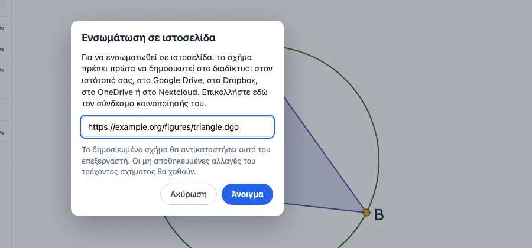
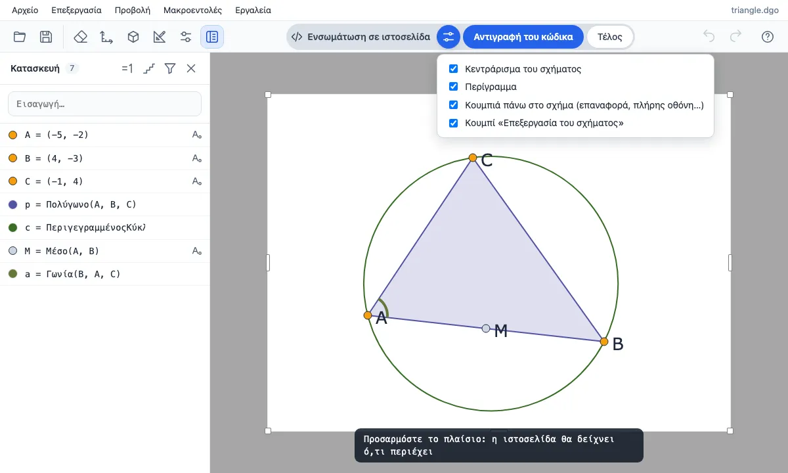

Ενσωμάτωση σε ιστοσελίδα
Ένα σχήμα του DocGeo μπορεί να εμφανίζεται σε οποιαδήποτε ιστοσελίδα — τον ιστότοπό σας, ένα μάθημα Moodle, ένα ιστολόγιο — και να μετακινείται εκεί όπως στο DocGeo. Αρκεί να επικολλήσετε στον HTML της σελίδας έναν κώδικα που ετοιμάζει ο επεξεργαστής. Το σχήμα προσαρμόζεται στο πλάτος της σελίδας, και σε κινητό.
Η αρχή
Η σελίδα δεν περιέχει το σχήμα: σε κάθε εμφάνιση το διαβάζει εκεί όπου το δημοσιεύσατε στο διαδίκτυο. Επομένως:
- το σχήμα πρέπει πρώτα να ανεβεί στο διαδίκτυο, όπως για την κοινοποίησή του με σύνδεσμο·
- για να ενημερώσετε τη σελίδα, αρκεί να αντικαταστήσετε το δημοσιευμένο αρχείο: όλες οι σελίδες που το ενσωματώνουν δείχνουν αμέσως τη νέα έκδοση, χωρίς αλλαγή στον κώδικά τους.
Βήμα προς βήμα
-
Αποθηκεύστε το σχήμα (Ctrl S) και
ανεβάστε το αρχείο
.dgoστο διαδίκτυο: στον ιστότοπό σας, στο Google Drive, στο Dropbox, στο OneDrive ή στο Nextcloud. Αντιγράψτε τον σύνδεσμο κοινοποίησής του. -
Επιλέξτε
Αρχείο › Ενσωμάτωση σε ιστοσελίδα…. Αν το
σχήμα δεν ανοίχτηκε από τον σύνδεσμό του, το DocGeo τον
ζητά: επικολλήστε τον και πατήστε Άνοιγμα.
Το δημοσιευμένο σχήμα αντικαθιστά τότε αυτό του επεξεργαστή,
κάτι που εγγυάται ότι ο κώδικας θα λειτουργεί.

- Ένα πλαίσιο εμφανίζεται πάνω στο σχήμα: η σελίδα θα δείχνει ακριβώς ό,τι περιέχει. Οι λαβές του (γωνίες και μέσα των πλευρών) αλλάζουν το μέγεθός του, τα άκρα και η ετικέτα του το μετακινούν. Για την πλαισίωση μπορείτε επίσης να μεγεθύνετε, να μετακινήσετε την προβολή ή να περιστρέψετε ένα τρισδιάστατο σχήμα· το σχήμα εξακολουθεί να μετακινείται.
-
Ρυθμίστε τις επιλογές αν χρειάζεται, με το κουμπί αριστερά
από το Αντιγραφή του κώδικα.

- Πατήστε Αντιγραφή του κώδικα και επικολλήστε αυτόν τον κώδικα στον HTML της σελίδας σας.
- Το Τέλος ή το Esc αφαιρεί το πλαίσιο.
Οι επιλογές
| Επιλογή | Αποτέλεσμα |
|---|---|
| Κεντράρισμα του σχήματος |
περικλείει τον κώδικα σε
<center>: το σχήμα
κεντράρεται στη σελίδα.
|
| Περίγραμμα | μια λεπτή γκρίζα γραμμή γύρω από το σχήμα. |
| Κουμπιά πάνω στο σχήμα | μια μικρή γραμμή πάνω δεξιά στο σχήμα, ορατή όταν το ποντίκι περνά από πάνω: επαναφορά του σχήματος, εμφάνιση σε πλήρη οθόνη. |
| Κουμπί «Επεξεργασία του σχήματος» | προσθέτει σε αυτή τη γραμμή ένα κουμπί που ανοίγει το σχήμα στον επεξεργαστή, σε νέα καρτέλα. Αποεπιλέξτε το, για παράδειγμα, ώστε οι μαθητές να μη βλέπουν την κατασκευή. |
Όλες οι επιλογές είναι αρχικά επιλεγμένες· οι επιλογές σας διατηρούνται μέχρι να κλείσει ο επεξεργαστής.
Ο κώδικας για επικόλληση
Ο αντιγραμμένος κώδικας μοιάζει με αυτόν:
<center><iframe
src="https://…/index.html?fit=704,512,…&url=https://…/triangle.dgo"
style="width:704px;max-width:100%;aspect-ratio:704/512;border:1px solid #ccc"
allow="fullscreen" loading="lazy"></iframe></center>
Για να αλλάξετε το μέγεθος του σχήματος στη σελίδα, αλλάξτε μόνο
το width, σε εικονοστοιχεία: το ύψος ακολουθεί και
το σχήμα διατηρεί τις αναλογίες του πλαισίου. Σε στενότερη
οθόνη, όπως ενός κινητού, μικραίνει μόνο του
(max-width:100%). Αλλάξτε το
aspect-ratio μόνο για να δώσετε άλλο σχήμα στη θέση
του σχήματος, που μένει μέσα της ολόκληρο και κεντραρισμένο. Οι
αριθμοί μετά το fit= περιγράφουν τι δείχνει το
σχήμα, όχι το μέγεθός του: μην τους αλλάζετε.
Επικολλήστε τον κώδικα εκεί όπου η σελίδα δέχεται HTML: στο ίδιο
το αρχείο .html, σε ένα μπλοκ «Προσαρμοσμένη HTML»
του WordPress ή στη λειτουργία HTML (πηγαίος κώδικας) του
επεξεργαστή κειμένου του Moodle.
Μέσα στη σελίδα
Το σχήμα χειρίζεται εκεί όπως στο DocGeo: σημεία, ολισθητές, πλαίσια ελέγχου, κουμπιά… Η σύρση σε κενό σημείο μετακινεί την προβολή ή την περιστρέφει στις τρεις διαστάσεις. Η ροδέλα κυλά τη σελίδα, όπως παντού· για μεγέθυνση του σχήματος χρησιμοποιήστε Ctrl + ροδέλα ή τσιμπήστε στην επιφάνεια αφής.
Απομακρύνετε δύο δάχτυλα για μεγέθυνση και φέρτε τα κοντά για σμίκρυνση. Σύρετε και τα δύο δάχτυλα μαζί για να μετακινήσετε την προβολή.
Τα κουμπιά πάνω δεξιά επαναφέρουν το σχήμα (όπως το άνοιξε η σελίδα), το δείχνουν σε πλήρη οθόνη και, αν η επιλογή είναι ενεργή, το ανοίγουν στον επεξεργαστή.
Ένα σχήμα με προβολή υπολογιστικού φύλλου δείχνει το φύλλο του, χωρίς μενού ούτε κουμπιά: μπορεί κανείς να γράψει στα κελιά του, και το σχήμα ακολουθεί. Η επαναφορά δίνει πίσω τα αρχικά κελιά (για τους μαθητές).

Ενημέρωση ενσωματωμένου σχήματος
Ανοίξτε το σχήμα στον επεξεργαστή από τον σύνδεσμό του (για παράδειγμα με το κουμπί «Επεξεργασία του σχήματος» της σελίδας), αλλάξτε το και αποθηκεύστε το, και μετά αντικαταστήστε το δημοσιευμένο αρχείο στο ίδιο σημείο, διατηρώντας τον σύνδεσμό του: στο Google Drive, ανεβάζοντας νέα έκδοση του αρχείου· στο Dropbox, στο OneDrive ή στο Nextcloud, βάζοντας το νέο αρχείο με το ίδιο όνομα στον ίδιο φάκελο. Όλες οι σελίδες που ενσωματώνουν το σχήμα δείχνουν τότε τη νέα έκδοση, χωρίς αλλαγή στον κώδικά τους.
Για να αλλάξετε μόνο την πλαισίωση, επιλέξτε ξανά Αρχείο › Ενσωμάτωση σε ιστοσελίδα… και αντιγράψτε τον νέο κώδικα: το δημοσιευμένο αρχείο δεν χρειάζεται να αλλάξει.
Αν το σχήμα άλλαξε στον επεξεργαστή από τότε που ανοίχτηκε από τον σύνδεσμό του, το DocGeo το υπενθυμίζει πριν δείξει το πλαίσιο: όσο το δημοσιευμένο αρχείο δεν αντικαθίσταται, η σελίδα δείχνει την προηγούμενη έκδοση.
Αν το σχήμα δεν εμφανίζεται
- Ο σύνδεσμος πρέπει να είναι δημόσιος: πρόσβαση «Οποιοσδήποτε έχει τον σύνδεσμο» στο Google Drive, σύνδεσμος χωρίς κωδικό στο Nextcloud.
-
Ορισμένες πλατφόρμες αφαιρούν τα
<iframe>από τον επικολλημένο HTML ή τα δέχονται μόνο για ορισμένους ιστότοπους ή χρήστες: ελέγξτε τις ρυθμίσεις της δικής σας. -
Ένας κώδικας που αντιγράφηκε από DocGeo εγκατεστημένο στον
υπολογιστή σας (διεύθυνση
localhost) λειτουργεί μόνο σε αυτόν: αντιγράψτε τον κώδικα από τον επεξεργαστή στο διαδίκτυο. -
Το κουμπί πλήρους οθόνης εμφανίζεται μόνο αν το
<iframe>έχει το χαρακτηριστικόallow="fullscreen", που περιέχει ο αντιγραμμένος κώδικας.